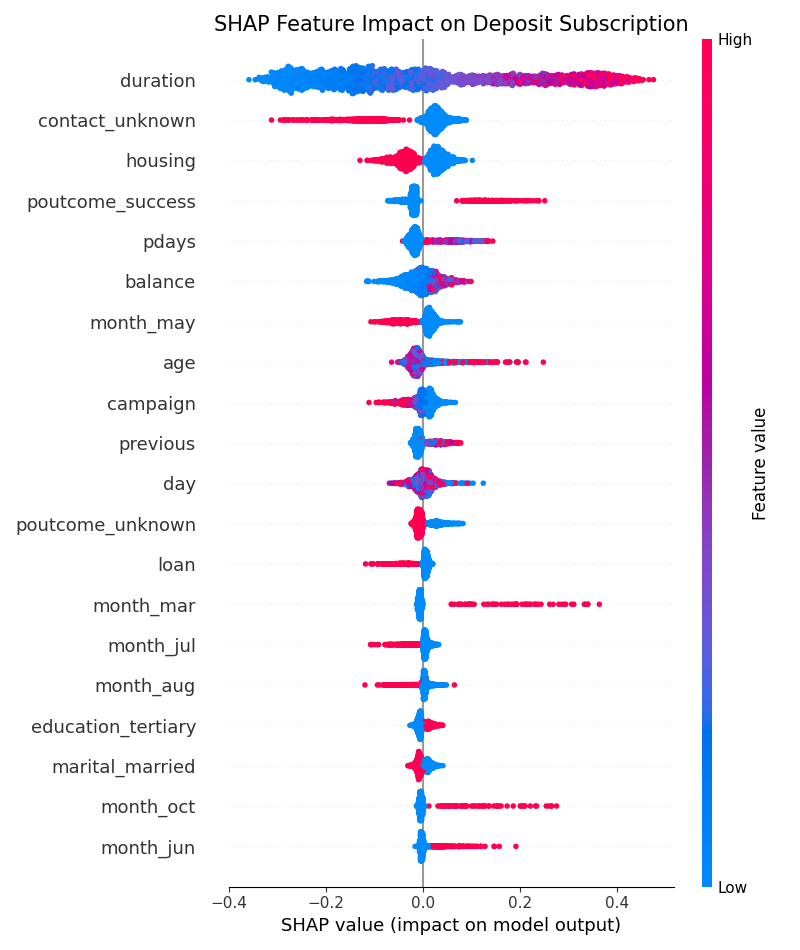
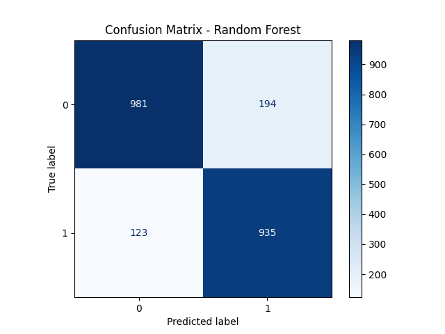
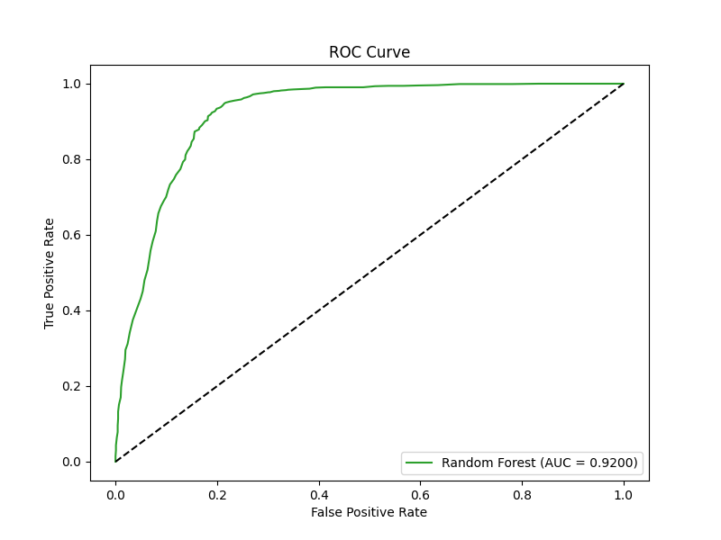

Tác giả: Hoàng Phương Thảo
Dự án này sử dụng Machine Learning để dự đoán xem khách hàng có đăng ký gửi tiền tiết kiệm (term deposit) hay không dựa trên dữ liệu các chiến dịch tiếp thị qua điện thoại của ngân hàng. Mục tiêu là giúp ngân hàng tối ưu hóa nguồn lực và tăng tỷ lệ chuyển đổi khách hàng.

Hình 1: Các đặc trưng ảnh hưởng nhất đến quyết định của khách hàng.


Chúng tôi phân loại ưu tiên liên hệ: Cao (>70%), Trung bình (40-70%), và Thấp (<40%) để tiết kiệm chi phí vận hành.
Xem chi tiết tại GitHub Repository.